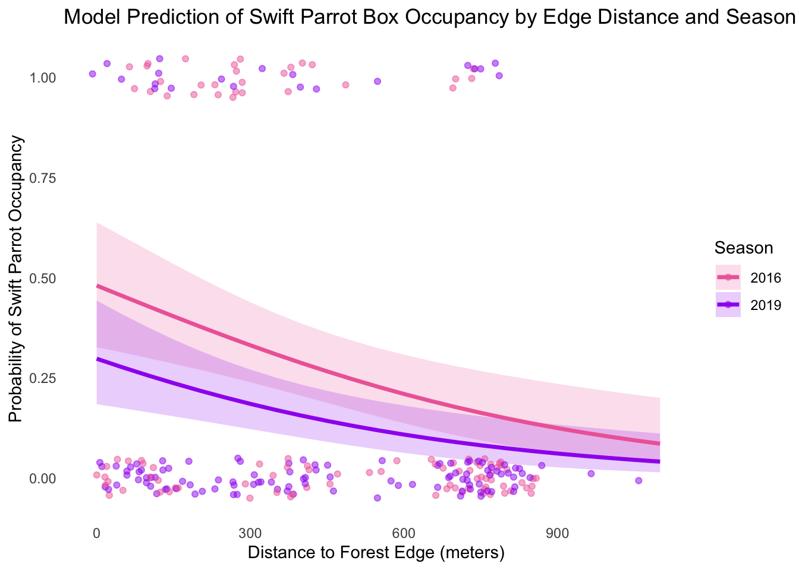

library(rprojroot)
knitr::opts_knit$set(root.dir = rprojroot::find_rstudio_root_file()) # resets root for pulling in data
library(tidyverse)
library(janitor)
library(dplyr)
library(here)
library(gt)
library(magick)
library(tibble)
library(lubridate)
#install.packages("MuMIn")
library(MuMIn)
#install.packages("DHARMa")
library(DHARMa)
library(ggplot2)
library(ggeffects)
sst<- read.csv(here("data", "SST_update2023.csv")) #reads in sea temp data
nest_boxes<- read.csv(here("data", "occdist.csv")) #reads in bird dataENVS 193DS Final
GitHub Repository: https://github.com/sanjanasujeet/ENVS-193DS_spring-2025_final
Problem 1. Research writing
a. Transparent Statistical Methods
In the first part, they used a Pearson’s correlation test to see if there is a relationship between the distance in km from headwater and the annual total nitrogen load in kg per year, this is assuming the data is normally distributed otherwise they could have also used Spearman’s.
In part 2, they used an ANOVA test to see whether the average nitrogen load measured in kg per year is different between sources(urban land, atmospheric dep, fertilizer, wastewater treatment, grasslands). This test was probably picked since there are multiple sources/groups and a one-way ANOVA tests if one group’s mean differs significantly from others
b. More information needed
To improve the ANOVA interpretation, a Post-hoc test should be invluded because while ANOVA tells you that atleast one group mean is different, it doesn’t tell you how many groups or which groups are significantly different. A test like Tukey’s HSD would clarify which nitrogen sources, like fertilizer or wastewater, differ significantly in nitrogen loads.
Another important thing to include would be summary statistics, like mean, standard error, and range, for each group, this would convey important information in the direction and magnitude of differences as well as how spread out the data is.
c. Suggestions for rewriting
Sites farther from the river headwaters were associated with higher total annual nitrogen loads, suggesting that nitrogen accumulates as water flows downstream. We rejected the null hypothesis that there is no correlation between distance from headwater (km) and annual total nitrogen load (kg year-1) (Pearson’s correlation test, r = correlation coefficient, p = 0.03, a = 0.05).
Nitrogen load varied significantly across different source types; urban land contributed more nitrogen than atmospheric deposition which suggests that urban land is a key driver of elevated nitrogen levels in the system. We rejected the null hypothesis that there is no difference in average nitrogen load (kg year-1) between sources (urban land, atmospheric deposition, fertilizer, wastewater treatment, and grasslands) (one-way ANOVA, F=test statistic, df= degrees of freedom, p = 0.02, a = 0.05). A follow up post-hoc Tukey’s HSD test determined that urban land ( mean difference = mean kg/yr, ±SE, range = range, p = p-value ) had significantly higher nitrogen loads than atmospheric deposition (mean difference = mean kg/yr, ±SE, range = range, p= p-value ); no significant differences were found between the other sources: fertilizer, wastewater treatment, and grasslands.
Problem 2. Data visualization
a. Cleaning and summarising
sst_clean <- clean_names(sst) |> #tidy names
mutate(date = ymd(date),
year = year(date),
month= month(date, label = TRUE)) |> #changes format of data
filter(year %in% c("2018", "2019", "2020", "2021", "2022", "2023")) |> #picks specific years i want
group_by(year, month) |> # uses year and month to group data for next step
summarise(mean_monthly_sst= round(mean(temp), 1), .groups = "drop") #creates rounded mean column
sst_clean$year <- factor(sst_clean$year, levels = c("2018", "2019", "2020", "2021", "2022", "2023")) #makes year a factor for next steps
#slice_sample(sst_clean) |>
# print(n=8) #shows 5 rows
slice_sample(sst_clean, n=5) #shows 5 rows# A tibble: 5 × 3
year month mean_monthly_sst
<fct> <ord> <dbl>
1 2023 Jun 16
2 2020 Apr 14.3
3 2019 May 14.3
4 2023 Dec 16.1
5 2021 Jan 13.9str(sst_clean) # shows setup of dftibble [72 × 3] (S3: tbl_df/tbl/data.frame)
$ year : Factor w/ 6 levels "2018","2019",..: 1 1 1 1 1 1 1 1 1 1 ...
$ month : Ord.factor w/ 12 levels "Jan"<"Feb"<"Mar"<..: 1 2 3 4 5 6 7 8 9 10 ...
$ mean_monthly_sst: num [1:72] 15 14.3 13.5 12.8 13.6 15.5 18.2 19.6 18.2 18.5 ...b. Visualize
ggplot(sst_clean, aes(x=month, y= mean_monthly_sst, group = year, color = year))+ #takes sst data, sets axis, and groups and colors by the year
geom_line()+#adds line to connect data
geom_point()+ #adds datapoints
scale_color_manual(
values = colorRampPalette(c("palegreen", "darkgreen"))(6), # manually adds a scale of 6 green colors
name = "Year"
) +#name of legend
scale_y_continuous(limits = c(12,20))+ # adds 20 to top of graph because it wasnt there before
theme_minimal()+
theme(
panel.grid=element_blank(),#remove gridlines
panel.border=element_rect(color = "grey60", fill=NA, size = 1.25), #adds a border around the graph in grey
axis.ticks = element_line(color = "grey60"),#adds axis ticks in grey
axis.text = element_text(color = "grey40"),#writes the axis elements in grey
legend.position = c(0.15, 0.75))+#moves legend inside the graph
labs(x = "Month", y= "Mean monthly sea surface temperature (°C)")#labels title and axisProblem 3. Data Analysis
a. Response variable
The Binary responses 0s and 1s in this data set refer to if the nest box is occupied and the column name specifies which species is present. Column sp refers to Swift parrot, cs refers to Common starling, tm refers to Tree martin and if there is a 1 in a row below it, it means that that specific species was present in the box; 0 means that the box is empty or occupied with another species; column e refers to if the box is empty of all species(1) or occupied(0).
b. Purpose of study
The study’s aim was to investigate how nest box’s occupancy by either the target species, Swift Parrots, or competing species(Common starlings and Tree martins) is influenced by distance from the edge of the forest and time from deployment. Out of the three species, critically endangered Swift Parrots were the intended occupants of the nest boxes, Common starling and Tree martins are the nontarget competitve species occupants.
c. Difference in seasons
Data was collected during the summer breeding season of 2016 when the boxes were put up and in the summer breeding season of 2019 when they had been in place for a few years. They differ because the study was looking at how occupant composition changed over time.
d. Table of models
4 models total:
| Model number | edge_distance | season | description |
|---|---|---|---|
| 0 | no predictors (null model) | ||
| 1 | X | edge distance as predictor | |
| 2 | X | season as predictor | |
| 3 | X | X | all predictors (full model) |
e. Run models
Model0<- glm(sp ~ 1, data = nest_boxes_clean, family = binomial()) #no predictors
Model1<- glm(sp ~ edge_distance, data = nest_boxes_clean, family = binomial()) #edge dist
Model2<- glm(sp ~ season, data = nest_boxes_clean, family = binomial()) # season
Model3<- glm(sp ~ edge_distance+season, data = nest_boxes_clean, family = binomial()) #both predictorsf. Check diagnostics
Model 0, null model
sim0 <- simulateResiduals(Model0) #dharma package residual graphs
par(mfrow = c(1, 2)) # 1 row 2 columns
plot(sim0)
Model 1, edge distance as predictor
sim1 <- simulateResiduals(Model1)#dharma package residual graphs
par(mfrow = c(1, 2)) # 1 row 2 columns
plot(sim1)Warning in newton(lsp = lsp, X = G$X, y = G$y, Eb = G$Eb, UrS = G$UrS, L = G$L,
: Fitting terminated with step failure - check results carefully
Model 2, season as predictor
sim2 <- simulateResiduals(Model2)#dharma package residual graphs
par(mfrow = c(1, 2)) # 1 row 2 columns
plot(sim2)
Model 3, both edge distance and season as predictor
sim3 <- simulateResiduals(Model3)#dharma package residual graphs
par(mfrow = c(1, 2)) # 1 row 2 columns
plot(sim3)
g. Select best model
AICc(Model0, Model1, Model2, Model3) |>
arrange(AICc) #Akaike’s Information Criterion(AIC) test, arranges from low to high or best model to worst df AICc
Model3 3 226.3133
Model1 2 229.6716
Model2 2 236.3744
Model0 1 238.8318The best model as determined by Akaike’s Information Criterion(AIC) is Model 3 which had both edge distance and season as predictors, this had the lowest AICc score(226.31) compared to the others(Model0 - 238.83, Model1 - 229.67, Model2 - 236.37)
h. Visualize model predictions
prediction <- ggpredict(Model3, terms = c("edge_distance", "season")) #creates prediction based on model 3 and using both the predictor variables
#graphics.off() #fixes graph issue and removes the old plots that were causing the graphics problem
ggplot(prediction, aes(x = x, y = predicted, group = group, color = group, fill = group)) +#takes prediction data, sets axis, and groups and colors by the groups made
geom_ribbon(aes(ymin = conf.low, ymax = conf.high), alpha = 0.2, color = NA) +#95% conf interval, removes color so i can manually add later
geom_line(size = 1.2) +#adds line
geom_jitter(data = nest_boxes_clean,
aes(x = edge_distance, y = sp, color = factor(season)),
width = 20, height = 0.05, alpha = 0.5,
inherit.aes = FALSE) +# adds jitter points from the underlying data, jittered by width and height because otherwise it was overlapping
labs(title = "Model Prediction of Swift Parrot Box Occupancy by Edge Distance and Season",
x = "Distance to Forest Edge (meters)",
y = "Probability of Swift Parrot Occupancy",
color = "Season",
fill = "Season"
) +#adds title and axis labels
theme_minimal() +
theme(
panel.grid = element_blank())+ #removes gridlines
scale_color_manual(values = c("2016" = "hotpink2", "2019" = "purple")) + # dots and lines colors
scale_fill_manual(values = c("2016" = "hotpink2", "2019" = "purple")) # confidence interval colors
i. Write caption for figure
Figure 1.
Model Prediction of Swift Parrot Box Occupancy by Edge Distance and Season. This model suggests that as distance to forest edge increases, probability of swift parrot occupancy decreases, also, in 2016 the probability was higher than in 2019. This figure displays model-predicted probabilities of Swift Parrot nest box occupancy derived from a general logistic regression model that includes edge distance and season as predictor variables. Distance to the forest edge(0 to 1000 meters) is shown on the x axis; season is shown in the legend with color differentiation, pink refering to the summer breeding season in 2016 and purple for the summer breeding season in 2019. Shaded ribbons represent 95% confidence intervals around the predicted probability lines and Jittered points show the raw binary data (1 = box occupied, 0 = unoccupied), with the same colors indicating season. The data came from: Stojanovic, Dejan et al. (2021). Do nest boxes breed the target species or its competitors? A case study of a critically endangered bird [Dataset]. Dryad. https://doi.org/10.5061/dryad.83bk3j9sb
j. Calculate model predictions
predicted_table <- ggpredict(Model3, terms = c("edge_distance [0,900]", "season")) #runs prediction based on model 3
print(predicted_table)# Predicted probabilities of sp
season: 2016
edge_distance | Predicted | 95% CI
--------------------------------------
0 | 0.48 | 0.33, 0.64
900 | 0.12 | 0.06, 0.24
season: 2019
edge_distance | Predicted | 95% CI
--------------------------------------
0 | 0.30 | 0.18, 0.44
900 | 0.06 | 0.03, 0.13k. Interpret results
Predicted probabilities from the regression model (Figure 1) show that Swift Parrot nest box occupancy is highest near the forest edge (0 m) and declines with increasing distance. At 0 m, the probability of occupancy was estimated at 0.43 in 2016 and 0.30 in 2019, while at 900 m, it dropped to 0.13 and 0.01, for 2016 and 2019 (table in part j). This indicates a negative relationship between distance from forest edge and the probability of Swift Parrot occupancy, with slightly higher probabilities in the earlier 2016 season. This trend could be explained by Swift Parrots’ preference for nesting near forest edges making distant nest boxes less favorable.
Problem 4. Affective and Exploratory visualizations
a. Comparing visualizations
The initial visualizations from Homework 2 are pretty different from the affective visualizations from Homework 3 mainly because the initial visuals were exploratory and mainly focused on communicating my data in the simplest, most straightforward way forward. In the affective visuals, my aim was still to communicate data but I was more focused towards a creative format, using a calendar/bookshelf layout instead of a traditional graph. Further, in my exploratory visuals, I hadn’t honed in on a reseach question so I graphed not just reading but also hours doing art and hours in the gym, but by the end of the quarter I decided to look at reading pace and stress levels. There are some similarities in colors(coral and green), simple square designs, and using stress levels as a predictor variable. In the first graphs, there isn’t a clear correlation between the variables but by later visuals, after narrowing my focus to reading pace and stress allowed clearer trends and there were some slight correlations between higher stress levels and lower average reading pace. I can’t compare means, medians or any other statistics between the two visuals since I didn’t have the same variables or run the same stats. In week 9, the only feedback that I got was that my visual would look nicer with a background and I don’t need to add a legend since the red-yellow-green colors were intuitive to mean low-medium-high. I incorporated both by adding a bookshelf background and replacing the legend with a title for the visual.
b. Sharing affective visualization
Done!